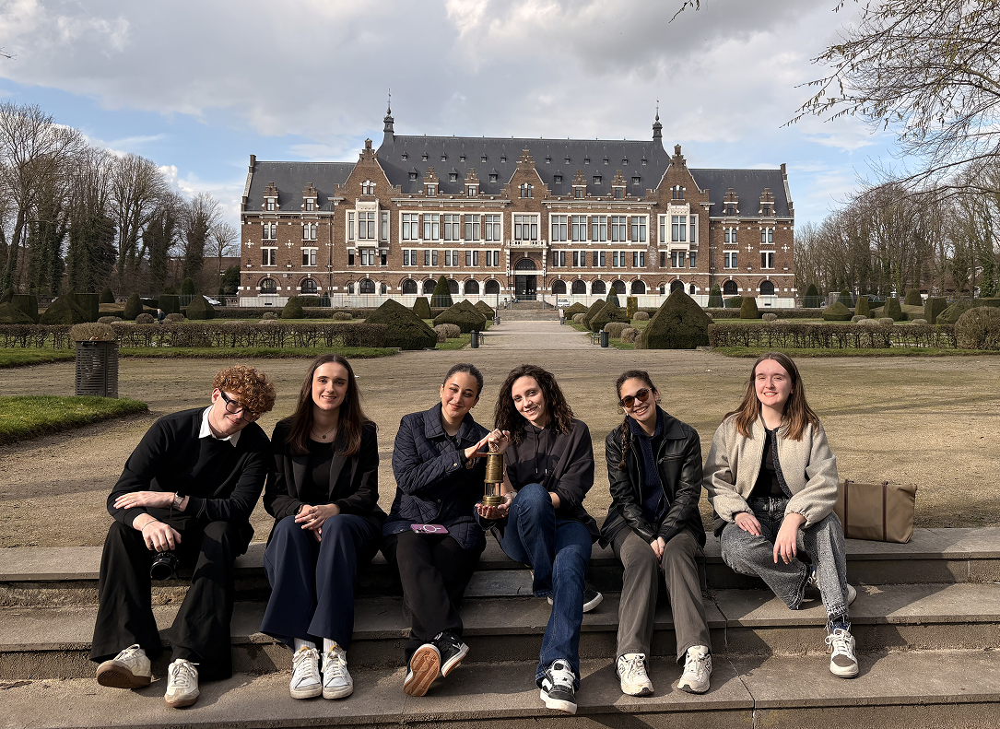
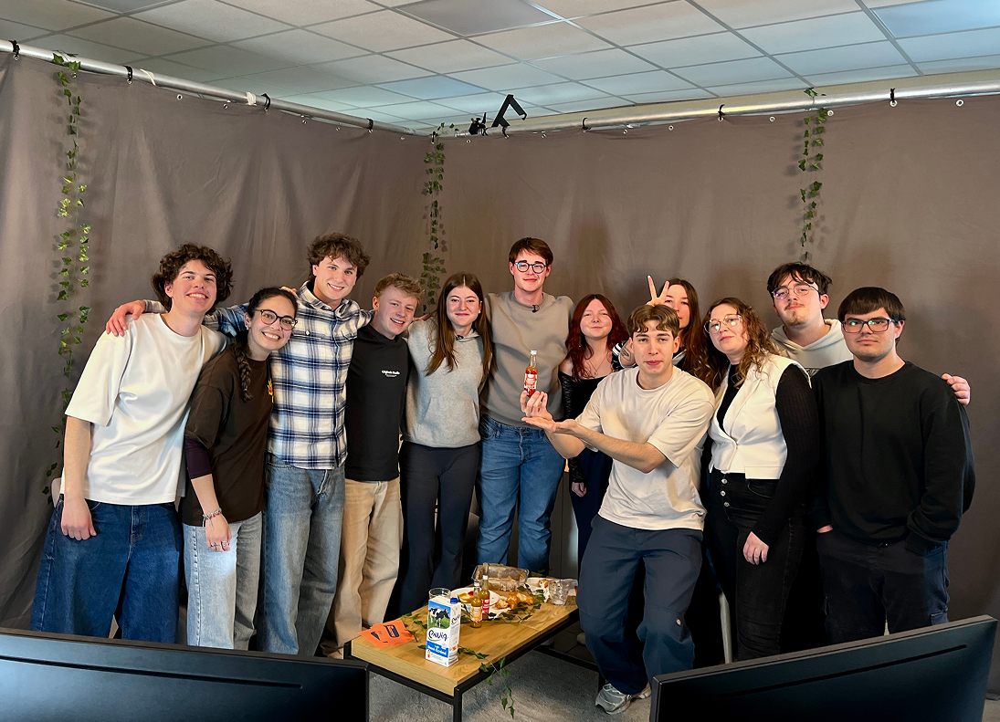

WEEK 1 - Wicks
For the first week, my team and I worked on a communications project for an event to internationally
showcase the mining
history in Lens. The main focus was on a real historical miner’s lamp and we created short and long form
videos to use
as promotion for our event.
My role in this was to create the instagram posts with the idea of a “wick” flowing through time and
reaching the newer
generations, and
through important locations
in Lens which are the places where we filmed.

Our Instagram
Our WebTVWEEK 2 - On Jasotte
For the second week, we were tasked to create a WebTV that showcased the mix of our cultures (Canada vs
France). We had
to create a visual identity for our show (the name Jasotte comes from a mix of the expressions “jaser”
and “papotte”
which all mean to talk in Quebec and in France) as well as at least one fake ad in between the segments.
For this project, I helped in planning the games we play during our show as well as participating in our
prerecorded
section and in the actuall livestream (being in front of the cameras and controling the camera cuts
behind the scenes).
WEEK 2 - On Jasotte
For the second week, we were tasked to create a WebTV that showcased the mix of our cultures (Canada
vs
France). We had
to create a visual identity for our show (the name Jasotte comes from a mix of the expressions
“jaser”
and “papotte”
which all mean to talk in Quebec and in France) as well as at least one fake ad in between the
segments.
For this project, I helped in planning the games we play during our show as well as participating in
our
prerecorded
section and in the actuall livestream (being in front of the cameras and controling the camera cuts
behind the scenes).